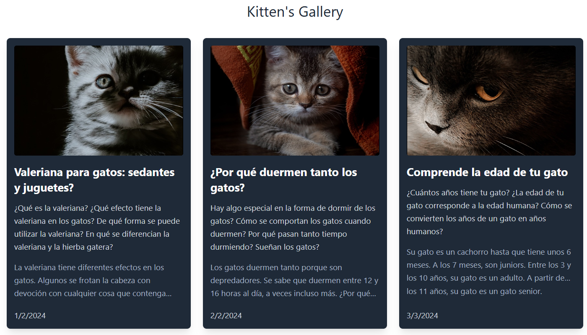
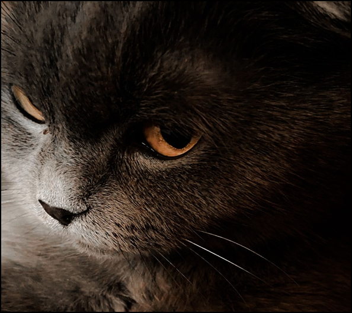

Ejercicio 1 - React
Utilizando la información que conoces hasta ahora de React y JavaScript, haz una galería de posts, con lo que has aprendido sobre componentes. Puedes maquetarla de la manera siguiente:

El array de objetos para los posts es el siguiente:
Array de Objetos (posts.js)
Por acá tienes la foto de los cuatro gatitos:

Recuerda revisar el documento Introducción a React. Antes de escribir la función para renderizar la galería de posts, deberás enlazar con el archivo posts.js